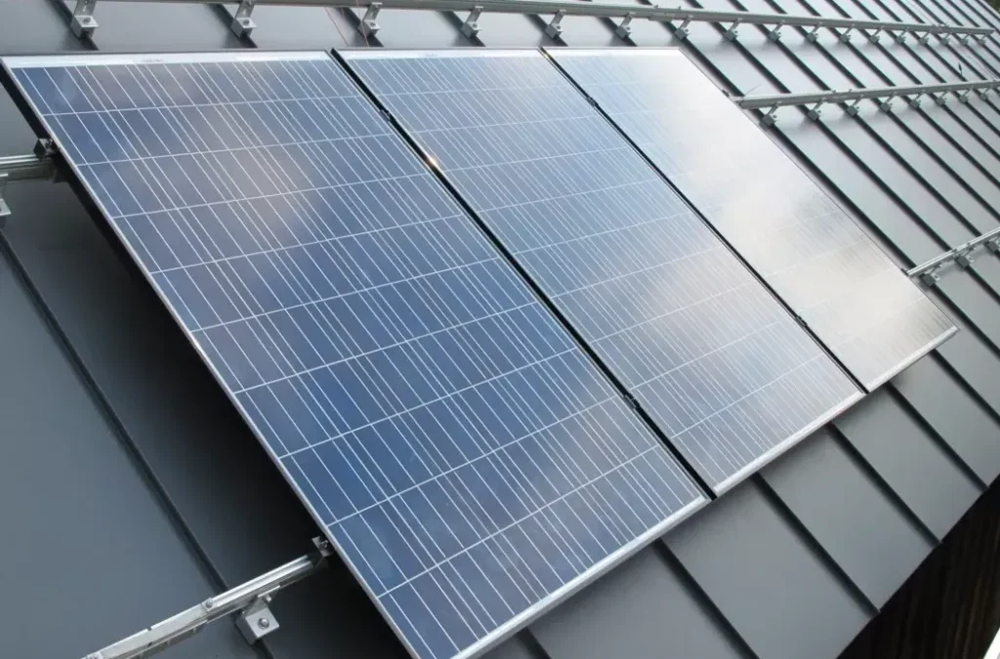

Can You Install Solar Panels on a Metal Roof? (2026 Guide)

One of the most common questions homeowners ask when considering the switch to renewable energy is whether their roof can handle the upgrade. If you have a metal roof, you are in luck. Not only can you install solar panels on a metal roof, but it is actually one of the absolute best materials for solar installations.
Why Metal Roofs Are Perfect for Solar
Metal roofs are known for their extreme durability, often lasting 40 to 70 years. Since high-quality tier-1 solar panels (like SunPower or REC) are guaranteed to produce energy for 25 to 30 years, having a roof that outlasts your panels is a massive financial advantage. You won't have to pay a crew to remove and reinstall your system to replace the roof underneath.
Mounting Options: Standing Seam vs. Corrugated
The way your solar panels are attached depends entirely on the type of metal roof you have:
- Standing Seam Metal Roofs: This is the holy grail for solar installers. Installers use an ingenious device called a U-clamp (or S-5! clip) that pinches the raised seams of the roof. Zero holes are drilled into your roof, which means a 0% chance of roof leaks caused by the solar installation.
- Corrugated Metal Roofs: For wavy or corrugated metal, installers use a special mounting system called straddle blocks. While this does require drilling small holes, they are secured into the structural trusses of the home and heavily waterproofed with specialized flashing and sealants.
Cost Comparison: Metal vs. Asphalt Shingles
Because standing seam metal roofs don't require penetration, the labor involved in mounting the panels is significantly reduced, which can lower your overall installation quote.
| Roof Material | Installation Labor Time | Risk of Leaks | Lifespan Sync with Panels |
|---|---|---|---|
| Standing Seam Metal | Very Fast (Clamps) | 0% (No drilling) | Excellent (Outlasts panels) |
| Corrugated Metal | Average | Low (Proper flashing) | Excellent |
| Asphalt Shingles | Average | Low | Poor (Usually needs replacement) |
Don't Forget the 30% Federal Tax Credit
Whether your roof is metal, tile, or asphalt, installing a residential solar system qualifies you for the 30% Federal Solar Tax Credit (ITC). Just remember that while the panels and the mounting hardware qualify for the credit, the cost of installing a new metal roof typically does not (unless specific structural reinforcements are required for the panels).